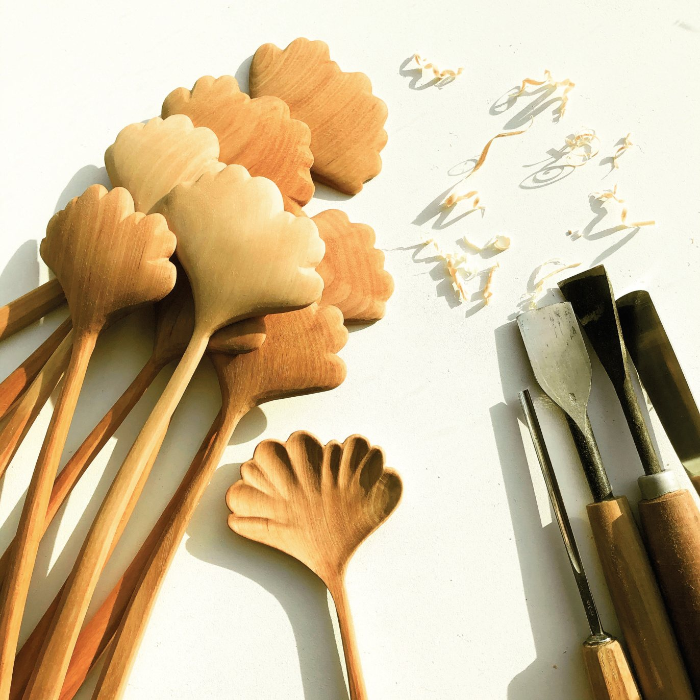

Every old hanok in Korea has a curve of its own. I wanted the handle to remember one.
It falls easily into either hand, left or right. Made for serving salads or shared dishes, it’s just as at home on the table every day.

Details
About 8.5 × 28 × 1 cm. Korean birch. Oil.
As each piece is carved by hand, dimensions may vary. Slight differences in colour and form are the character of each individual wood.